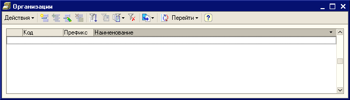
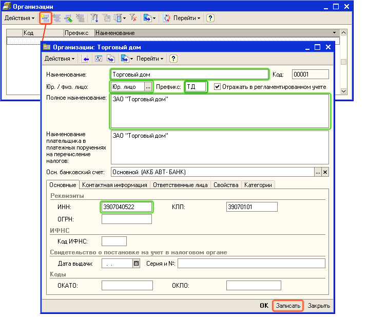
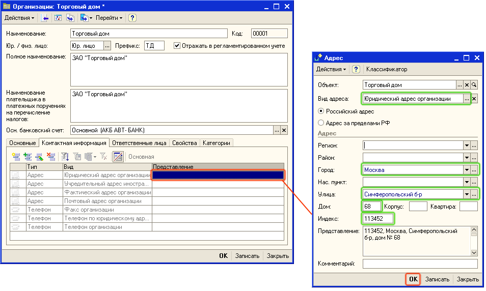
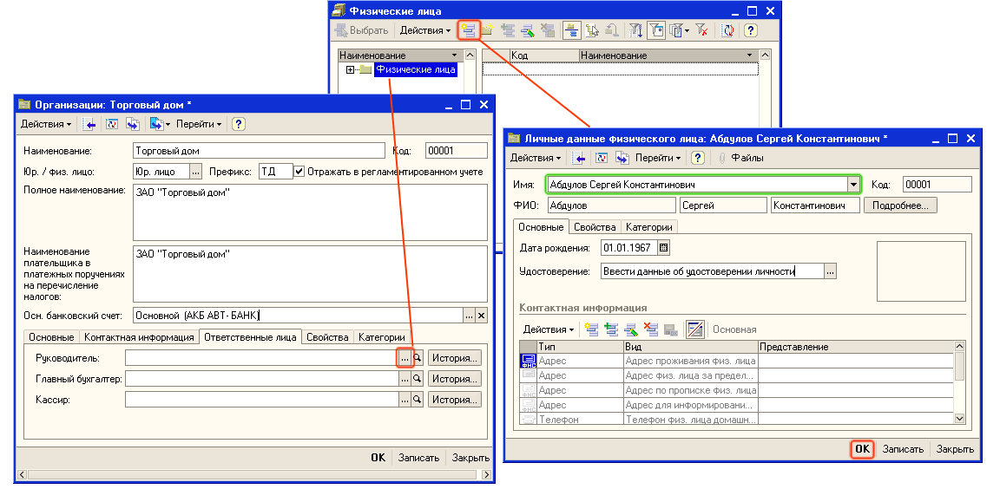
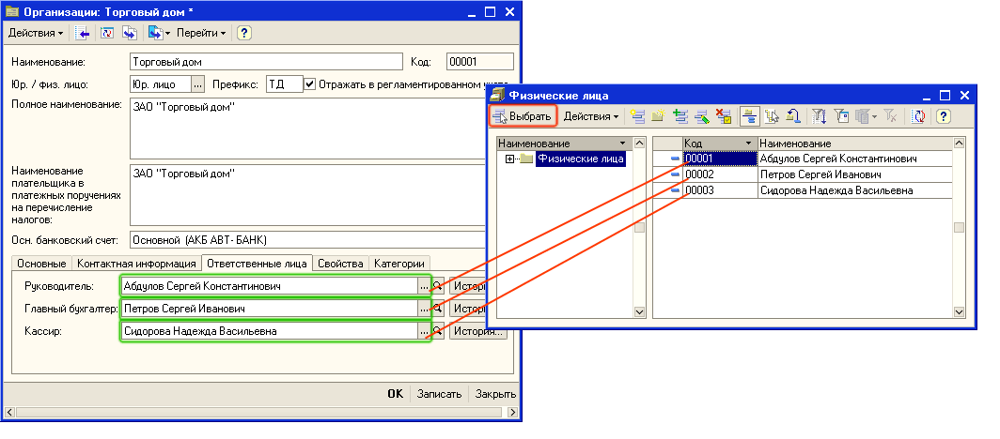

Торговое предприятие может состоять из нескольких организаций. Организации, входящие в состав торгового предприятия могут быть как юридическими, так и физическими лицами. Информация об организациях, входящих в состав торгового предприятия, заполняется в справочнике "Организации".
1. Откройте список Организации. Для этого в меню Справочники выберите пункт меню Предприятие, а затем пункт подменю Организации.

2. Откройте форму для ввода основных сведений о Вашей организации.
Для этого нажмите кнопку  или выберите меню Действия — Добавить в командной панели формы списка. Для добавления нового элемента можно также использовать кнопку INS на клавиатуре.
или выберите меню Действия — Добавить в командной панели формы списка. Для добавления нового элемента можно также использовать кнопку INS на клавиатуре.
3. В открывшемся окне заполните сведения об организации, так как это показано на рисунке.

Нажмите на кнопку Записать для сохранения сведений об организации.
4. Введите информацию об юридическом адресе организации. Для этого в этом же окне перейдите на закладку Контактная информация. Откройте специальное диалоговое окно и заполните в нем адрес, так как это показано на рисунке.

5. Нажмите на кнопку ОК в диалоговом окне Адрес. Юридический адрес будет введен в форму организации. Этот адрес будет использоваться при печати документов.
6. Введите информацию об ответственных лицах организации (директор, главный бухгалтер, кассир). Для этого перейдите на закладку Ответственные лица. Нажмите на кнопку , откроется справочник Физические лица.
Для ввода сведений об ответственном лице нажмите кнопку  или выберите меню Действия — Добавить в командной панели формы списка "Физические лица". В открывшемся диалоговом окне "Личные данные физического лица" введите фамилию, имя, отчество ответственного лица, как это показано на рисунке.
или выберите меню Действия — Добавить в командной панели формы списка "Физические лица". В открывшемся диалоговом окне "Личные данные физического лица" введите фамилию, имя, отчество ответственного лица, как это показано на рисунке.

7. Нажмите на кнопку ОК в карточке "Личные данные физического лица". Информация будет перенесена в список Физические лица. Аналогичным образом добавьте в справочник "Физические лица" информацию о главном бухгалтере и кассире.
8. Для выбора ответственного лица в качестве руководителя предприятия установите курсор на информацию об ответственном лице в справочнике "Физические лица" и нажмите в панели управления на кнопку Выбрать. Аналогичным образом выберите из справочника "Физические лица" информацию о главном бухгалтере и кассире организации.

Важно. Информация об ответственных лицах организации используется при печати документов. Информация об ответственных лицах может периодически обновляться. С помощью кнопки История можно, например, посмотреть список всех тех лиц, которые являлись в Вашей торговой организации главными бухгалтерами в течение года.
9. Нажмите на кнопку ОК в форме Организации для сохранения сведений об организации и закрытия формы.
Аналогичным образом введите информацию обо всех остальных организациях, входящих в состав Вашего торгового предприятия.
Следующий раздел: «Установка параметров учетной политики торгового предприятия»